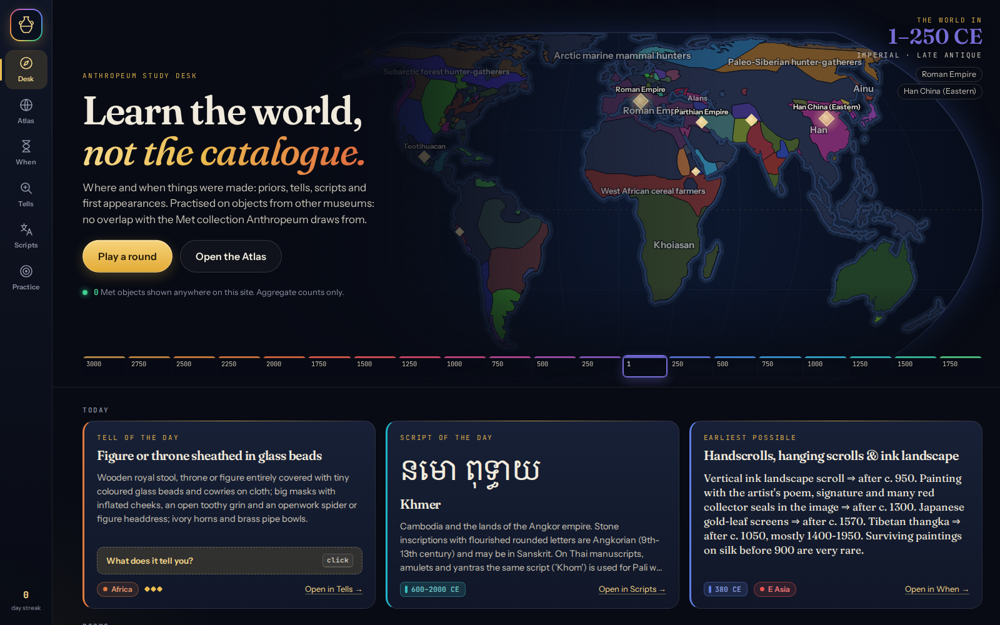
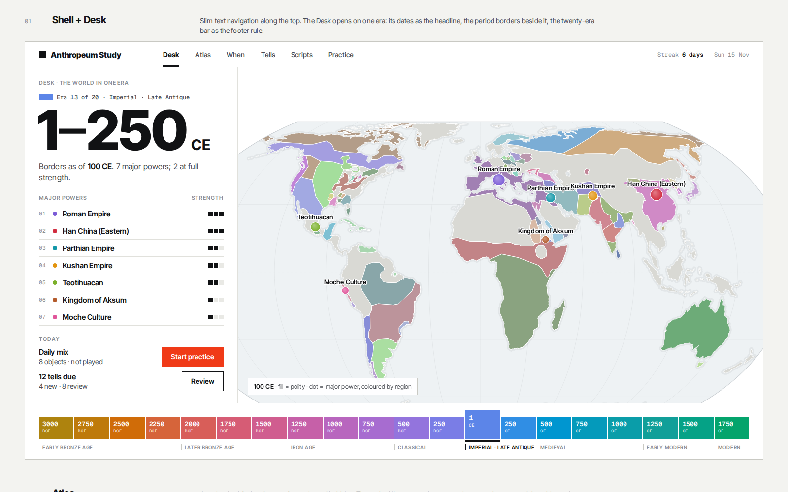
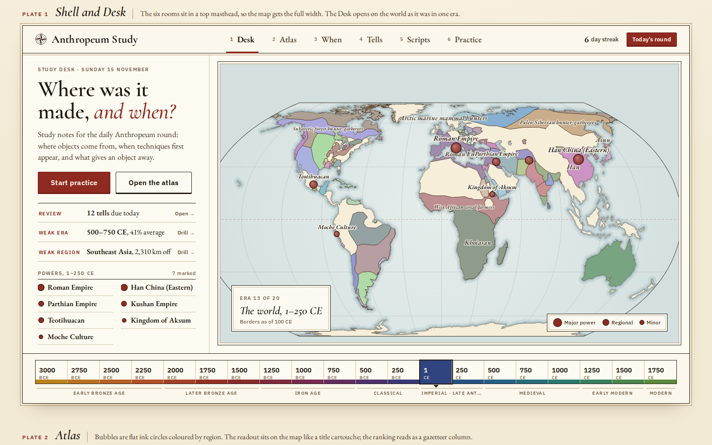
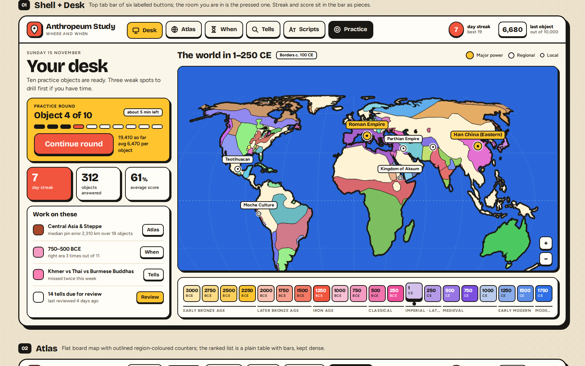

Four UI directions
The same product in four visual styles. A is the working app. B, C and D are static template pages: seven screens each, built with the real data and the real map, but the controls are not wired up and the personal stats on them are sample values.

A · working app
Night Gallery
Dark navy, gold accent, serif headlines, glowing map, icon rail on the left.
- Most atmosphere; the map and era colours glow.
- Dense screens can feel heavy; small text has less contrast than on a light page.

B · template
Museum Label
White wall, heavy black sans, hairline rules. Colour appears only on eras and regions.
- Fastest to read; numbers and lists are very clear.
- Least mood. Neighbouring era colours are closer together than in A.

C · template
Vellum Atlas
Cream paper, ink-coloured serif type, an engraved-style map, top masthead.
- Suits the subject; long text (tells, rules) reads comfortably.
- Quieter colours; yellow data marks are weak on paper.

D · template
Game Board
Thick outlines, flat bright colour, big pressable buttons, streak and score as game pieces.
- Most playful; practice and review feel like a game.
- Loudest. Data-heavy screens (Atlas, When) have to work harder to stay calm.